Container Escape Telemetry: Series Overview
I ran 15 container escape scenarios against Tetragon, Falco, and Tracee to answer a question most detection engineers can't: what kernel-level telemetry does each tool actually produce when a container escape happens? This is the series overview and key findings.
As a detection engineer, container escapes have always fascinated me. Detections focused on control bypasses can be both extremely difficult to make and extremely valuable when they fire. The challenge is that most discussions about container runtime security focus on whether a tool detected an escape – a binary yes/no that doesn’t tell you much about the underlying telemetry that makes detection possible in the first place.
There’s also a marketing problem. I’ve seen vendors demonstrate container escape detection against one or two scenarios – usually cgroup release_agent or nsenter – and present that as comprehensive coverage. It isn’t. A tool that detects cgroup escapes but misses DirtyPipe, or catches namespace transitions but is blind to capability abuse, provides a false sense of security. You can’t evaluate coverage without testing breadth.
I wanted to understand something more fundamental: what kernel-level telemetry do container escapes actually generate? What syscall patterns, namespace transitions, credential changes, and behavioral signals does each escape technique produce, and how do different eBPF-based tools capture (or fail to capture) those signals?
To answer that, I built 15 container escape and stress-test scenarios across five distinct attack classes, pointed three eBPF-based detection tools at them from isolated VMs, and analyzed tens of thousands of raw events. This series is the result.

The Three Tools
Tetragon (Cilium/Isovalent) defines custom eBPF kprobes via TracingPolicy YAML. Filtering happens in the kernel – events that don’t match a policy never reach userspace. Every event carries 10 namespace inodes, full capability sets, complete credential structs, and process ancestry. You write precision hooks for exactly the kernel functions you care about. The tradeoff: it ships with zero escape-detection policies. You’re writing everything from scratch.
Falco (Sysdig/CNCF Graduated) ships with 400+ community rules and captures syscalls broadly via its eBPF driver, evaluating rule conditions in userspace. It has the broadest ecosystem: MITRE ATT&CK mappings, Kubernetes admission webhooks, PagerDuty integration. The tradeoff: its default rules only detected 5 of 13 scoreable scenarios (S01-S14, excluding the S06 baseline and S15 stress test). The gaps were all configuration, not engine limitations.
Tracee (Aqua Security) attaches to 330+ syscall tracepoints and runs a behavioral signature engine on top. Its standout feature: events like magic_write (fires on page cache corruption regardless of the syscall that caused it) and commit_creds (captures kernel credential struct transitions). These detect exploit consequences rather than specific syscall patterns, making them resilient to exploit variations. The tradeoff: without proper policy tuning, Tracee’s broad hook coverage makes it vulnerable to adversarial syscall flooding.
The Scenarios
Most container escape research tests one or two techniques against one tool and calls it a day. I wanted broader coverage because the interesting findings come from cross-tool comparison – seeing how three different architectures respond to the same kernel event. But breadth without variety just gives you fifteen versions of the same data point. So the scenarios were designed to cover fundamentally different attack classes, each testing a different aspect of how these tools observe the kernel.
Misconfiguration escapes (S01-S05) are the bread and butter: cgroup release_agent, CVE-2022-0492 fallback, nsenter, Docker socket mount, host /proc access. These work on any kernel because they exploit configuration mistakes, not vulnerabilities. They’re also the most common real-world escape vector – most container breakouts in the wild are someone running --privileged or mounting docker.sock, not dropping a kernel zero-day. If a tool can’t detect these, it’s not ready for production.
A baseline control (S06) runs an unprivileged container doing nothing suspicious. This gives us the noise floor – how much telemetry does each tool generate when nothing is happening? Without this, you can’t evaluate signal-to-noise ratios. Tetragon generated 1,127 events from a clean container. Tracee generated 29. That 39x ratio on nothing tells you a lot about each tool’s observability philosophy.
CVE-based patterns (S07-S12) test whether the tools can detect specific kernel exploits: Leaky Vessels, DirtyPipe (a real exploit on our kernel – splice actually corrupts the page cache), fsconfig heap overflow, Netfilter OOB write, maskedPaths symlink race, and runc /proc/self/exe overwrite. These matter because CVEs are what drive most detection rule authoring. The question isn’t just “can the tool see the syscalls” but “does the tool ship with rules for this CVE, or do you have to write them yourself?”
Capability abuse scenarios (S13-S14) came from peer review feedback: “I would have loved if one of your scenarios was taking a privileged container that isn’t a straight breakout.” Fair point. S01-S12 all focus on crossing namespace boundaries. But the more common real-world threat is a --privileged container abusing its capabilities without ever escaping – mounting host block devices, reading /proc/1/environ for secrets, enumerating kernel keyrings. These techniques map directly to what TeamPCP does in production. Tools optimized for detecting namespace violations have weaker coverage here, and that gap matters.
A stress test (S15) answers a question the detection scenarios don’t: what happens when an attacker floods millions of syscalls per second to overwhelm eBPF ring buffers while simultaneously running an escape? Any unprivileged container can do this – openat("/dev/null") in a tight loop at 100K+ ops/sec is trivial. If that’s enough to make a tool miss a concurrent nsenter, it’s a practical blind spot.
Each scenario ran on each tool’s dedicated VM (3 GB RAM, 2 vCPUs, Ubuntu 22.04, kernel 5.15.0-91-generic). One tool per VM, no eBPF hook contention. A PowerShell/bash harness automated the full workflow: provision, upload, install, execute with timestamped markers, download results.
Key Findings
No single tool provides complete detection. Every tool left gaps that another tool covered. Tetragon scored 12/13, Tracee 11/13 (12/13 with an additional event enabled), Falco 11/13 (up from 5/13 after custom rules). The one scenario all three missed – Leaky Vessels (S07) – is fundamentally undetectable by observation-based tools because the vulnerability is the absence of a syscall (a close() that should have happened but didn’t).
The tools disagree about what matters, and the disagreements are instructive. Tetragon hooks the exact CVE syscall (precise but CVE-specific). Tracee hooks the exploit consequence (behavioral but broader). Falco hooks what community rules define (accessible but incomplete). For DirtyPipe, Tetragon captured do_splice with file paths. Tracee captured 961 magic_write events – page cache corruption regardless of mechanism. The next kernel CVE that corrupts the page cache will trigger magic_write even if it uses a completely different syscall chain.
Configuration is the first line of defense, not architecture. An unfiltered Tracee policy generated 3.76M events and lost 10.1M more under adversarial syscall flooding (S15), missing the escape entirely. The same tool with path-filtered security_file_open captured the escape with zero drops – 41 events total during S15 alone, and 15,169 total across all 15 scenarios (a 99.6% reduction from the unfiltered 3.76M). Tetragon’s in-kernel filtering and Falco’s buffer prioritization provide structural resilience, but Tracee’s result proves that proper tuning can close the gap.
Default configurations are insufficient for real threats. TeamPCP, a threat actor active right now, uses Docker API scanning, privileged container creation, and /proc/*/environ harvesting – techniques that map directly to our S04, S13, and S14 scenarios. None of the three tools detected /proc/1/environ reads out of the box. All three could after tuning. The gap between “installed” and “detecting real attacks” is where most operational effort goes.
Falco’s gaps are the most actionable finding. Every syscall Tetragon and Tracee use for detection is supported by Falco’s event model. Twelve custom rules took Falco from 5/13 to 11/13. If you’re already running Falco, those rules close most of the gap without changing infrastructure.
Telemetry volume varies by 60x across tools. Tetragon generated 1.2 GB across 15 scenarios (forensically self-sufficient events averaging ~15 KB each). Tracee generated ~20 MB (compact events, ~1.4 KB each). Falco sat in between at 36 MB. They’re not interchangeable – they answer different questions at different costs.
The Series
- Part 1: Isolation Primitives and the eBPF Observability Model – what containers are at the kernel level, how eBPF tools get telemetry out of the kernel, and why the delivery mechanism is itself an attack surface
- Part 2: Methodology and Tool Architecture – the lab, the 15 scenarios, tool architectures, and the full detection coverage matrix
- Part 3: What Each Tool Actually Captured – per-scenario telemetry breakdowns and six patterns every deployment should monitor
- Part 4: Volume, Signal-to-Noise, and Choosing a Tool – aggregate numbers, production rate estimates, the Falco rule gap, S15 stress test, and recommendations by threat model
- Part 5: Tuning eBPF Tools From Defaults to Detection – what ships by default, what you have to build, and every configuration pitfall we hit
- Part 6: TeamPCP and What the Lab Predicted – mapping a real threat actor’s kill chain against our lab telemetry
If you’re a detection engineer working in container security, start with Part 1 for the full context or jump to Part 3 for the per-scenario data. If you’re evaluating which tool to deploy, Part 4 has the recommendations. If you just installed one of these tools and want to know what to do next, Part 5 is for you.
The full scenario scripts, Tetragon policies, Falco rules, Tracee policy, and automation harness are available in the research repository.
LLM Disclosure
Claude (Anthropic) was used throughout this project to assist with lab setup and automation, telemetry analysis and correlation, and authoring this blog series.